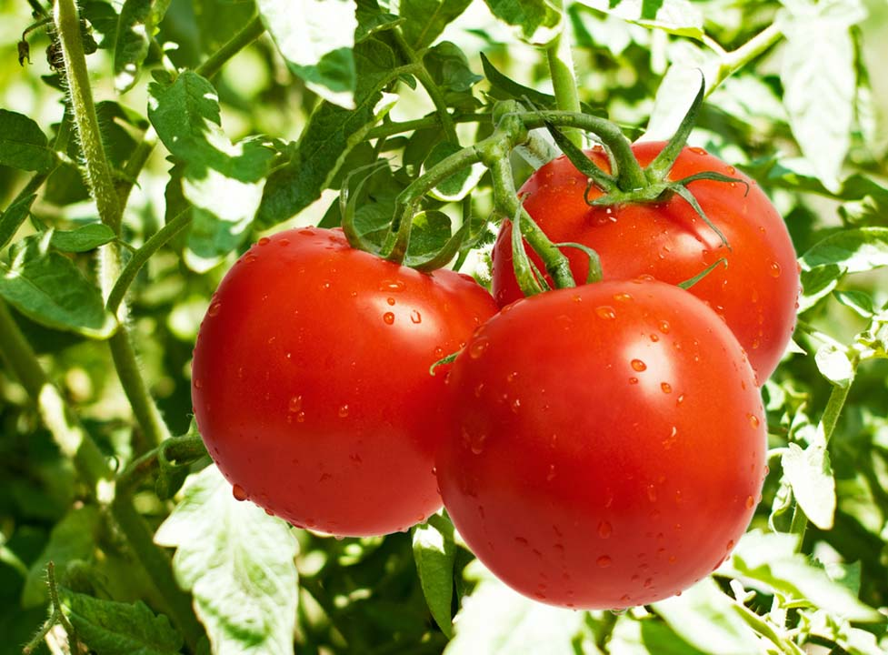

Каталог
РАННИЕ СОРТА ТОМАТОВ ДЛЯ ОТКРЫТОГО ГРУНТА

Альфа
Раннеспелый супердетерминантный сорт (87-96 дней от появления всходов до начала созревания плодов) для открытого грунта и пленочных укрытий. Может выращиваться безрассадным способом. Высота растения 40-50 см. Плоды некрупные (50-70 г), плоскоокруглые, красные, сочные. Назначение — салатное.
Амурский штамб
Раннеспелый детерминантный сорт (85-95 дней) для открытого грунта и пленочных укрытий. Может выращиваться безрассадным способом. Растение высотой 45-50 см, штамбовое, не требующее пасынкования. Плоды весом до 120 г, округлые, красные. Назначение сорта — салатное. Сорт ценен своей холодостойкостью, устойчивостью к неблагоприятным климатическим условиям, нетребовательностью.
Афродита F1
Ультраранний детерминантный гибрид (75-80 дней) для открытого грунта. Растение высотой 50-70 см, компактное. Плоды массой 110-115 г, округлые, красные, очень плотные, отличаются отменной лежкостью и транспортабельностью. Назначение — универсальное.
Бенито F1
Ультраранний детерминантный гибрид (плодоношение начинается через 70 дней после посева) для открытого грунта и пленочных укрытий. Растение невысокое (45-50 см). Плоды до 140 г весом, сливовидной формы, красные, мясистые. Назначение — универсальное. Гибрид устойчив к вертициллезному увяданию и фузариозу.
Валентина
Раннеспелый детерминантный сорт (95-98 дней) для открытого грунта. Отличается засухоустойчивостью, выносливостью, ранним дружным плодоношением. Растение до 70 см высотой, полураскидистое, не нуждающееся в пасынковании. Плоды весом 80-120 г, сливовидные, красные, отличаются плотной толстой кожицей; устойчивы к растрескиванию; в них повышенно содержание аскорбиновой кислоты. Назначение сорта — универсальное.
Взрыв
Улучшенный вариант классического сорта 'Белый налив'. Скороспелый детерминантный сорт (93-100 дней) для открытого грунта и пленочных укрытий. Может выращиваться безрассадным способом. Растение высотой 40-45 см, раскидистое, требующее умеренного пасынкования. Плоды весом 120-150 г, округлые, красные. Назначение — универсальное. Сорт отличается повышенной холодостойкостью, устойчивостью к фитофторозу.
Джина
Раннеспелый детерминантный сорт (90-100 дней) для открытого грунта и пленочных теплиц. Растение до 70 см высотой, нуждается в умеренном пасынковании. Плоды достигают веса 300-350 г (средняя масса 190-210 г), округлой формы, оранжево-красные, мясистые, устойчивые к растрескиванию. Назначение сорта — универсальное. Устойчив в вертициллезному увяданию и фузариозу.
Дон Жуан
Раннеспелый детерминантный сорт (90-100 дней) для открытого грунта и пленочных укрытий. Высота растения 60-70 см. Плоды имеют оригинальную форму и окраску: они удлиненные, с «носиком»; малинового цвета, с тонкими продольными желтыми полосками. Масса плодов 70-80 г; они отлично транспортируются и хранятся. Рекомендуется для цельноплодного консервирования.
Крайний Север
Раннеспелый детерминантный сорт (85-93 дня) для открытого грунта и пленочных укрытий. Может выращиваться безрассадным способом. Растение до 65 см в высоту, штамбовое, не нуждающееся в пасынковании, компактное. Плоды весом 60-70 г, округлые, красные. Назначение — универсальное. Сорт примечателен холодостойкостью, устойчивостью к фитофторозу, дружным плодоношением.
Кукла F1
Ультраранний детерминантный гибрид (85-95 дней) для открытого грунта и пленочных укрытий. Отличается высокой урожайностью. Растение достигает 60-70 см в высоту, требует умеренного пасынкования. Плоды массой 150-200 г (могут достигать 400 г в хороших условиях), округлые, розовые. Рекомендован для употребления в свежем виде и переработки.
Купидон F1
Скороспелый детерминантный гибрид (90 дней) для открытого грунта. Награжден Золотой медалью выставки «Садовод и фермер»; отличается высокой урожайностью. Растение высотой до 60 см, нуждается в умеренном пасынковании. Плоды массой 75-100 г, плоскоокруглые, красные, плотные, отличаются отличной транспортабельностью и повышенной лежкостью. Рекомендован для консервирования и товарного производства.
Легионер F1
Ранний детерминантный гибрид (90-95 дней) для открытого грунта и пленочных укрытий. Растение невысокое (45-60 см), но раскидистое. Плоды массой 140-150 г, розовые, округлые, не растрескиваются. Назначение — салатное. Гибрид примечателен повышенной устойчивостью к целому ряду заболеваний, включая бактериоз и фитофтороз.
Максимка
Ультраранний детерминантный сорт (75-80 дней) для открытого грунта. Растение невысокое (50-60 см). Плоды весом 80-100 г, красные, плоскоокруглой формы, хорошего вкуса. Назначение сорта — универсальное.
Мариша
Раннеспелый детерминантный сорт (80-90 дней) для открытого грунта. Невысокое (40-50 см) растение не нуждается в пасынковании. Плоды массой 50-120 г, округлые, красные, отличаются хорошей транспортабельностью. Назначение сорта — салатное.
Пародист
Новый ультраскороспелый детерминантный сорт (80-85 дней) для открытого грунта и пленочных теплиц. Растение высотой 40-50 см при выращивании в открытом грунте не требует пасынкования и формирования; при выращивании в пленочных теплицах рекомендуется формирование в 3 стебля, по 3-4 кисти в каждом. Плоды массой 140-160 г, плоскоокруглые, красные. Сорт отличает высокая завязываемость плодов в любых погодных условиях, урожайность. Назначение — салатное.
Санька
Ультраскороспелый детерминантный сорт (85-96 дней) для открытого грунта и пленочных укрытий. Растение высотой 35-40 см, компактное, не нуждающееся в пасынковании. Плоды массой 80-100 г, округлые, красные. Назначение сорта — универсальное. Сорт отличается дружным созреванием урожая.